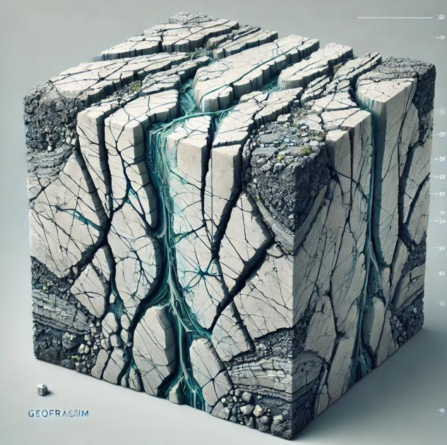
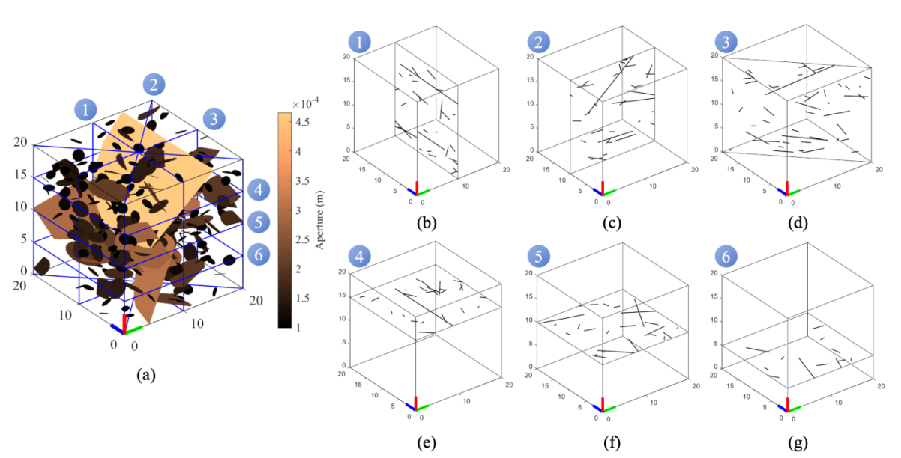
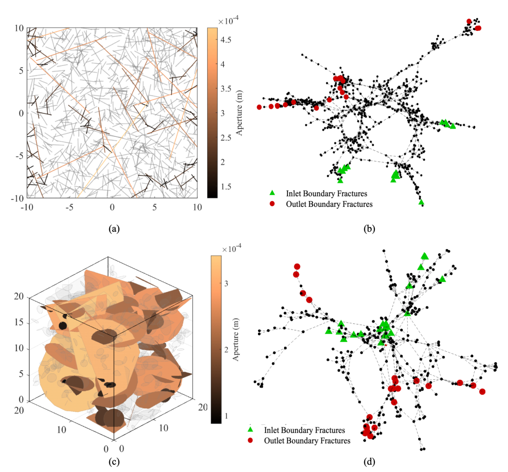
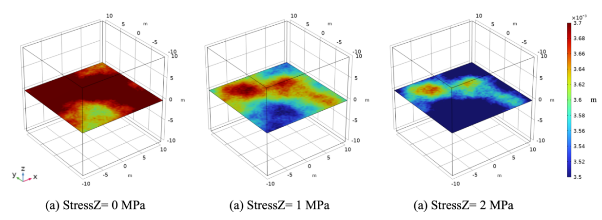
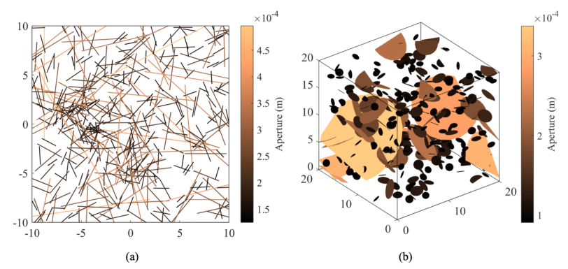
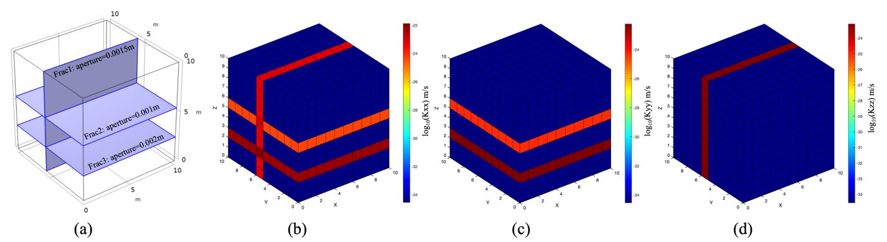

Fracture network characterization
Quantitative descriptors link fracture intensity, spatial distribution, topology, and connectivity to the hydraulic response of rock masses.

RockFracProDiscrete fracture network modelling · fractured rock hydraulics
RockFracPro is a MATLAB and COMSOL-coupled discrete fracture network simulation platform for stochastic DFN generation, connectivity analysis, rough fracture flow simulation, and equivalent permeability upscaling in fractured rock masses.

About Me
Hi, I'm Han Chenghao, a researcher at Shandong University of Science and Technology. My work focuses on complex fracture network modelling and seepage, disaster risk mitigation in mining engineering. More personal information is available on my university profile.
Research
Quantitative descriptors link fracture intensity, spatial distribution, topology, and connectivity to the hydraulic response of rock masses.
Programmatic coupling between MATLAB and COMSOL supports reproducible seepage simulation, equivalent permeability evaluation, and anisotropy analysis.
Large ensembles of DFN realizations are used to connect geological parameters, connectivity measures, and machine-learning-based permeability estimates.
Software
RockFracPro is an integrated DFN simulation platform designed for stochastic fracture generation, rough fracture representation, connectivity analysis, flow simulation, and permeability upscaling. The platform supports conventional fractured-rock analysis and batch workflows for uncertainty quantification and data-driven modelling.

Applications

RockFracPro builds rough fracture surfaces, evaluates aperture fields under loading, and supports nonlinear seepage analysis through repeatable simulation batches.

Large 2D DFN datasets are used to study how fracture length distribution, orientation, density, and connectivity influence equivalent permeability.

Explicit fracture-scale responses are converted into heterogeneous continuum permeability fields, enabling efficient multi-well flow simulations at engineering scale.
Publications
Manuscript in preparation. Selected concepts are summarized on this page without reproducing the full unpublished text.
Connectivity, permeability tensors, and data-driven hydraulic property prediction for 2D random DFNs.
Analysis of how 3D network topology and connection patterns control permeability evolution.
Rough fracture geometry, nonlinear seepage behaviour, and equivalent hydraulic aperture prediction.
Contact
I am interested in DFN modelling, fractured rock hydraulics, permeability upscaling, and data-driven prediction methods for underground engineering and georesource systems.